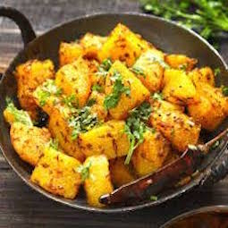
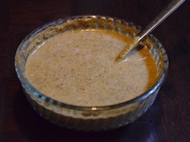
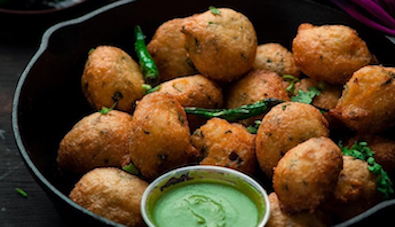

Uttarakhand Cuisine
By Rishikesha Ramesh
Index
| Bhangjeera ki Chutney |
| Urad Ke Pakode (Wada) |
| Aloo Ke Gutke |
and more!
Ingredients
- 50 Gram Bhaang ke dane
- 2 Green chillies
- 3 Tbsp Lemon juice
- 2 Tbsp Mint leaves, chopped
- 3 Tbsp Water
- 1/2 tsp Salt
Steps
- Roast the bhang seeds and then grind them in a mixier.
- Add the green chillies, lemon juice, mint leaves, water and salt and grind to a paste in a mixier.
- The chutney is ready!
<
Ingredients
- 1 cup Urad Dal/Split Black Lentil
- ¼ cup Suji/Semolina
- ½ cup Chopped Onion
- ¼ cup Chopped Coriander Leaves
- 2 Green Chilies Chopped Finely
- 1 Inch Ginger Finely Chopped
- 2-3 Pinch Soda
- 4-5 Peppercorn Crushed
- ½ tsp Cumin Seeds Crushed
- Salt
- Oil for Frying
Steps
- Wash and soak the urad dal for 3-4 hrs or overnight.
- Drain the dal and blend it till smooth paste, use less than ¼ cup water if required. Remove the mixture into the mixing bowl.
- Now add all remaining ingredients into the urad dal paste except oil, mix it/beat it well with spoon till light soft batter.
- Heat the oil for frying in deep pan, once hot enough, drop small small balls into the hot oil with your hand or spoon and fry them until all sides becomes golden brown.
- Remove Pakodas on absorbent paper, use same process for remaining batter and make Pakodas.
- Your Urad Dal Pakoda is ready to serve with green chutney, ketchup or hot tea.
Ingredients
- 4-5 potatoes, peeled
- 4 Tbsp mustard oil
- A pinch of asafoetida
- 1 tsp cumin seeds
- 1 tsp coriander powder
- 1 tsp red chilli powder
- 1/2 tsp turmeric powder
- 3 whole red chillies
- Water
- Salt
- Chopped coriander for garnish
Steps
- Par boil the potatoes and cut them into cubes.
- Mix the coriander powder, chilli powder and turmeric powder in 4 tbs of water, making a watery paste.
- In a pan, heat 3 tbsp of mustard oil to smoking point.
- Add the asafoetida and the cumin seeds. Quickly pour the masala paste into the pan and cook for 30 secs, stirring continuously.
- Now mix the potatoes into the masala.
- Add salt and 1/2 a cup of water to cook the potatoes.
- In another pan, heat 1 tbs of mustard oil to smoking point. Add the whole chillies and let them crackle. Add this tadka to the potatoes, mix well.
- Garnish with coriander leaves. Serve hot



Here is more info!